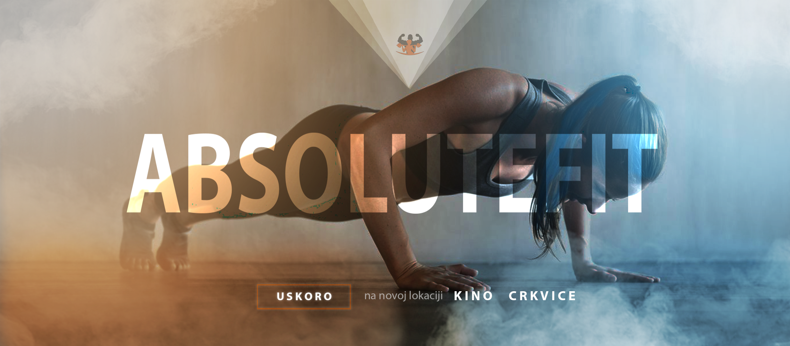
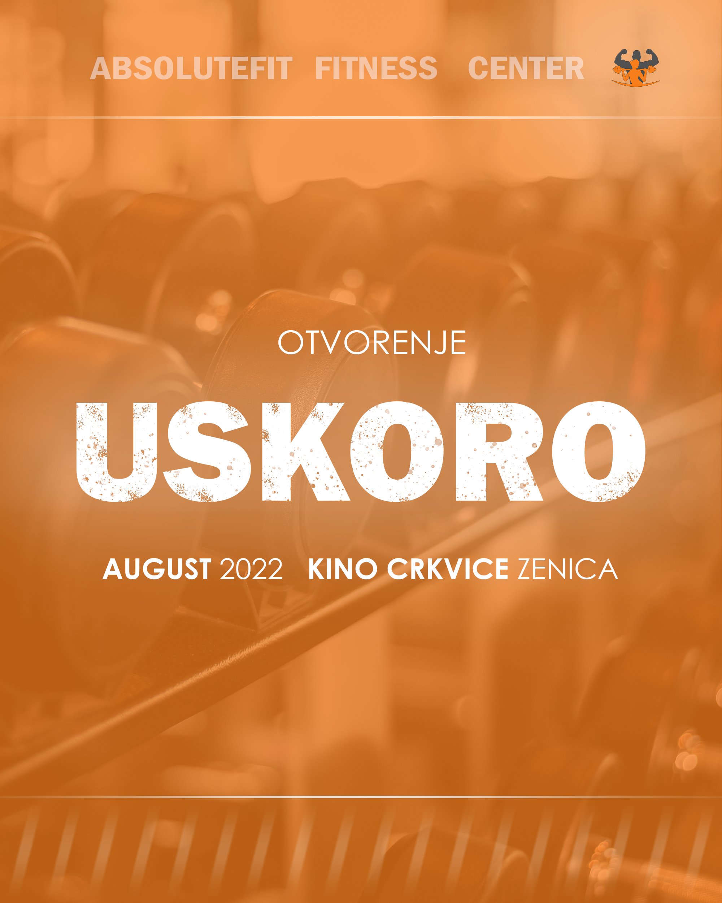
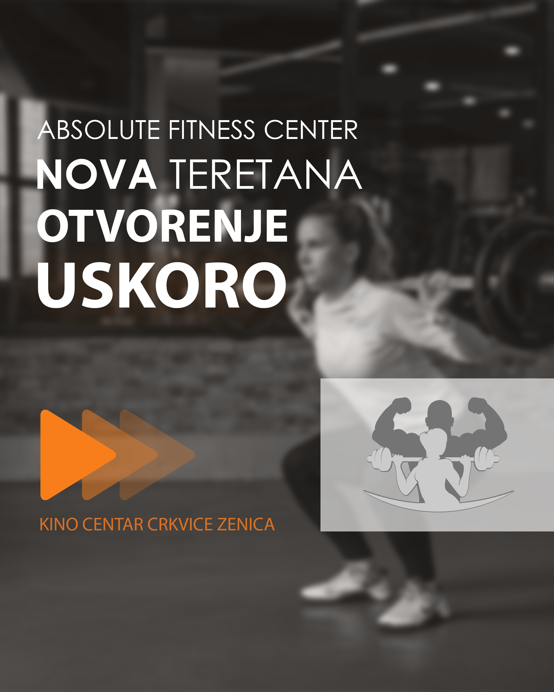
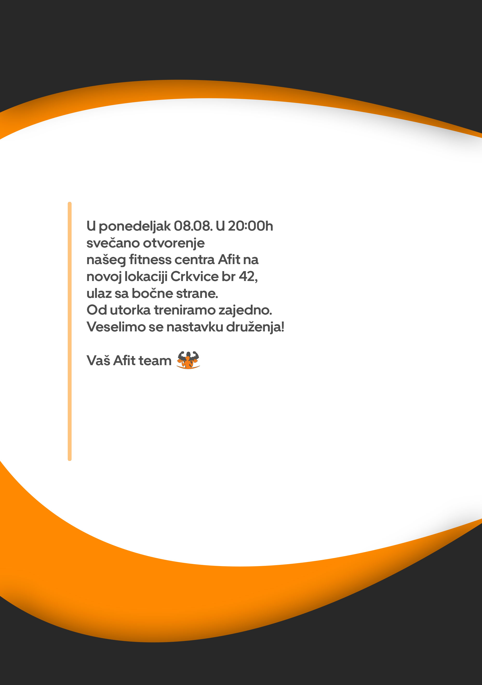
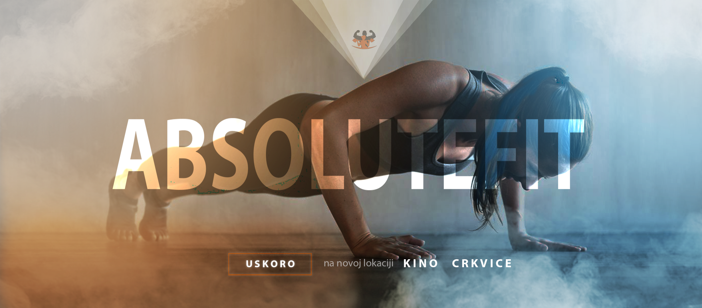
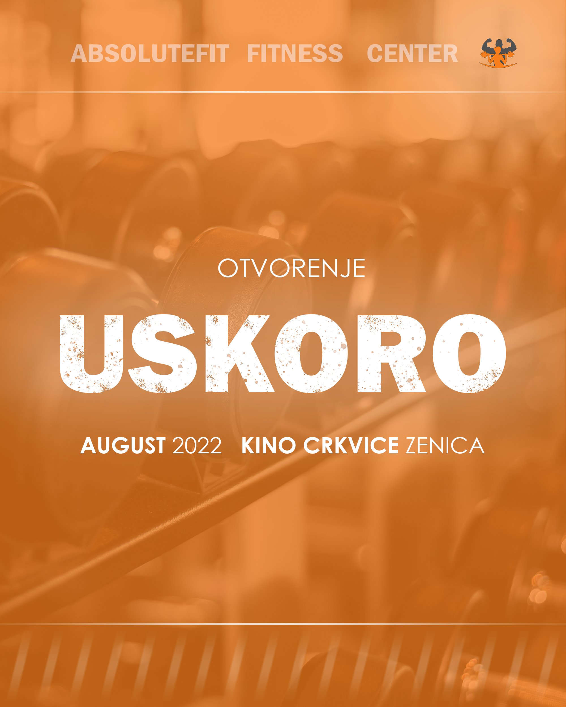
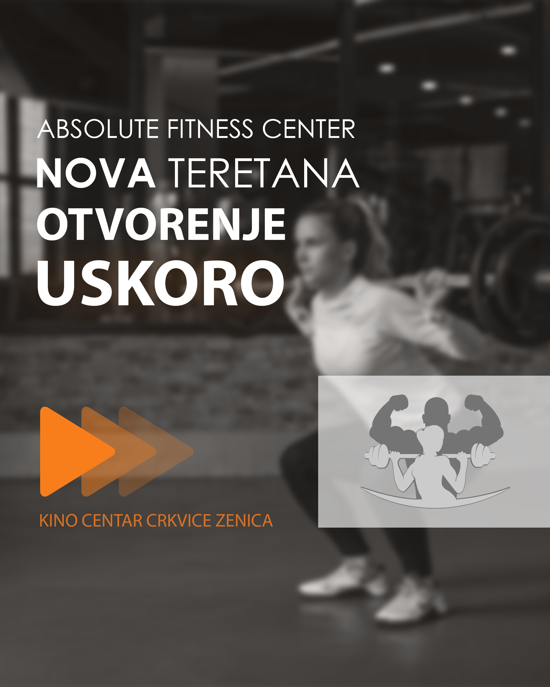
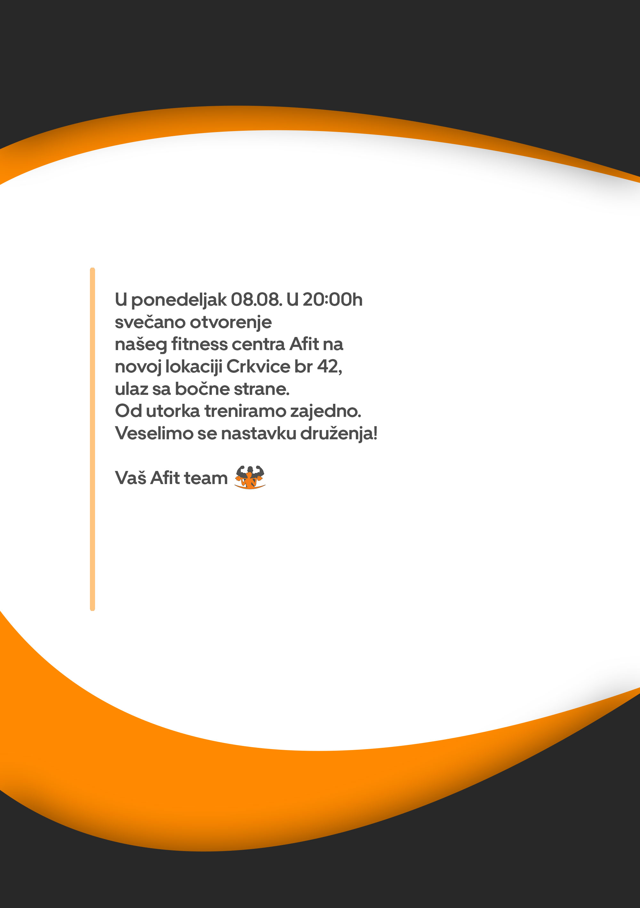
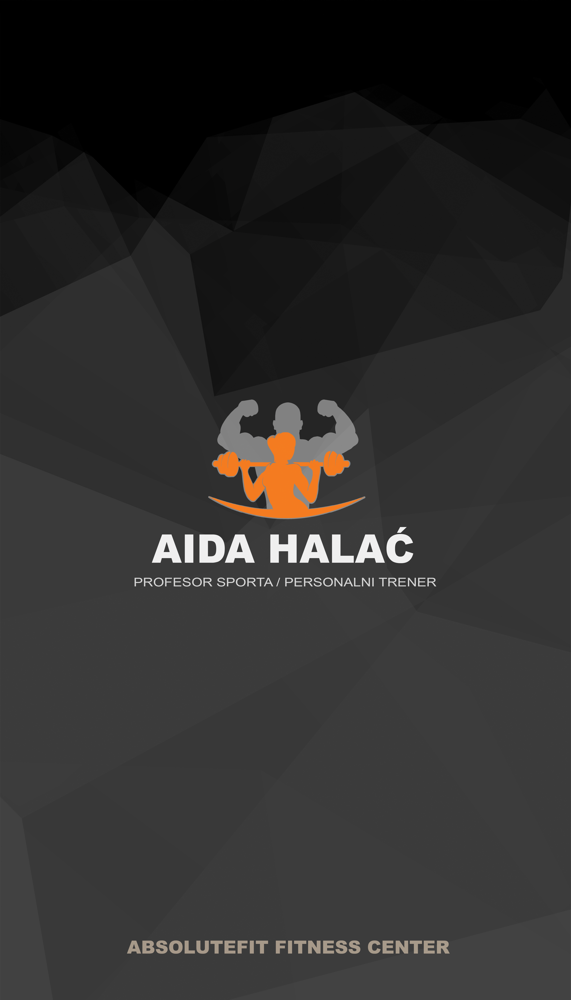
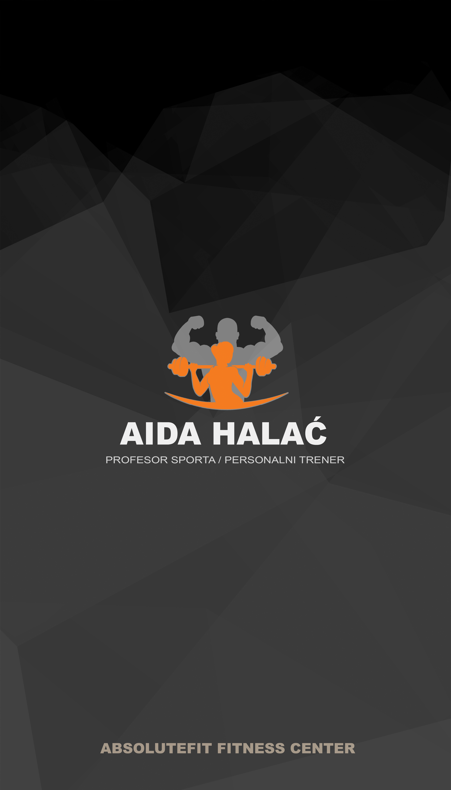

Role & Responsibilities
Graphic Designer
• Logo Redesign
• Creating Membership Card
• Creating Visitng Card
• Creating Marketing Material
Overview
Introducing Absolute Fit, a premier fitness center located in the heart of Zenica. With its distinguished heritage and a commitment to wellness, this cherished establishment was in dire need of a contemporary rebranding. The objective was to elevate its visual identity and create a cohesive design system that reflected the values and standards of the fitness center. With an eye towards the future and a commitment to excellence, the new creation and recreation of the existing designs was a pivotal step in the evolution of Absolute Fit, propelling it to the forefront of the fitness industry.
Context
Upon the relocation of Absolute Fit to a new location, the owner approached me with an exciting opportunity to revitalize the existing designs and create new visual assets. I eagerly embraced this challenge and embarked on a partnership with the owner to elevate the brand and create a cohesive, contemporary design system. As a result, I am honored to continue providing design support for Absolute Fit, working closely with the owner to bring their vision to life.
Logo
The owner of Absolute Fit tasked me with the responsibility of modernizing and simplifying the existing logo while preserving its core meaning and essence. Upon thorough analysis and consideration, I opted to make strategic updates to the color palette, aimed at enhancing the logo's simplicity and visual appeal. Additionally, I carefully edited the design by removing unnecessary details, resulting in a more refined and aesthetically pleasing logo. The end result was a timeless, yet modern logo that perfectly embodies the spirit of Absolute Fit.
During a conversation with the owner of Absolute Fit, it was revealed that plans were underway to revamp the interior design of the fitness center with a black and gray color scheme. In response, I presented the idea of creating a desaturated version of the logo for specialized use. This would allow for a harmonious integration of the logo into the new interior design, while also preserving its versatility for a wider range of applications.
Opening Material
 







I created promotional materials for the opening of Absolute Fit, which were used in a social media campaign. The materials aimed to build excitement for the launch and reach a broad audience. These included visuals and messaging that emphasized the brand and its commitment to fitness and wellness.
Visiting Card
 

The visiting card of Absolute Fit displays information about the fitness center, including the personal trainer's contact details, location of the fitness center and a QR code that links to the fitness center's Instagram page. The back of the card showcases the logo of the fitness center and the personal trainer's name against a darker background. It provides clients with essential information in a professional and straightforward manner.
Membership Card
The membership cards of Absolute Fit are a simple yet effective tool for members to manage their fitness journey. These cards feature a personalized area for members to write their name, and a QR code for easy access to the fitness center's resources. The front of the card displays general information, while the back showcases the center's logo against a darker background. These cards provide a convenient and professional solution for members to stay connected with the fitness center.
Exericse Information Banner


The wall banners at Absolute Fit serve as a visual aid to guide members in their workout routines. These banners showcase targeted muscle groups for each exercise, allowing for a more informed and effective workout experience. To align with the aesthetic of the fitness center's interior, each banner has been carefully designed to complement the overall ambiance. The wall banners are a valuable addition to the fitness center, providing a professional and visually appealing resource for members to optimize their fitness journeys.
Wallpaper
The grand wall of Absolute Fit has been adorned with a custom wallpaper, designed to provide inspiration and motivation to all who enter the fitness center. The eye-catching design showcases the Absolute Fit logo in a visually stunning manner, while seamlessly integrating with the existing interior design. The wall serves as a testament to the commitment of the fitness center to support and encourage its members, providing a bold and uplifting statement in the heart of the facility.
Mockups & Real Life Examples

The End
That's it for this project. I really hope you enjoyed it.